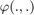

IMU-GNSS Sensor-Fusion on the KITTI Dataset
Goals of this script:
- apply the UKF for estimating the 3D pose, velocity and sensor biases of a vehicle on real data.
- efficiently propagate the filter when one part of the Jacobian is already known.
- efficiently update the system for GNSS position.
We assume the reader is already familiar with the approach described in the tutorial and in the 2D SLAM example.
This script proposes an UKF to estimate the 3D attitude, the velocity, and the position of a rigid body in space from inertial sensors and position measurement.
We use the KITTI data that can be found in the repo https://github.com/borglab/gtsam/blob/develop/matlab/gtsam_examples/IMUKittiExampleGNSS.m (examples folder).
Contents
Initialization
Start by cleaning the workspace.
clear all; close all;
Model and Data
% observation frequency (Hz) gps_freq = 1; % load data [omegas, ys, one_hot_ys, t] = imu_gnss_kitti_load(gps_freq); % IMU noise standard deviation (noise is isotropic) imu_noise_std = [0.01; % gyro (rad/s) 0.05; % accelerometer (m/s^2) 0.000001; % gyro bias 0.0001]; % accelerometer bias % gps noise standard deviation (m) gps_noise_std = 0.05; % total number of timestamps N = length(one_hot_ys);
The state and the input contain the following variables:
states(n).Rot % 3d orientation (matrix) states(n).v % 3d velocity states(n).p % 3d position states(n).b_gyro % gyro bias states(n).b_acc % accelerometer bias omega(n).gyro % vehicle angular velocities omega(n).acc % vehicle specific forces
A measurement ys(:, k) contains GNSS (position) measurement
Filter Design and Initialization
We now design the UKF on parallelizable manifolds. This script embeds the state in  , such that:
, such that:
- the retraction  is the
 exponential for orientation, and the vector addition for the remaining part of the state.
exponential for orientation, and the vector addition for the remaining part of the state. - the inverse retraction
 is the logarithm for orientation and the vector subtraction for the remaining part of the state.
is the logarithm for orientation and the vector subtraction for the remaining part of the state.
Remaining parameter setting is standard.
% propagation noise covariance matrix ukf_Q = blkdiag(imu_noise_std(1)^2*eye(3), imu_noise_std(2)^2*eye(3), ... imu_noise_std(3)^2*eye(3), imu_noise_std(4)^2*eye(3)); % measurement noise covariance matrix R = gps_noise_std.^2 * eye(3); % initial uncertainty matrix ukf_P0 = blkdiag(0.01*eye(3), eye(3), eye(3), 0.001*eye(3), 0.001*eye(3)); % sigma point parameters ukf_alpha = [1e-3, 1e-3, 1e-3];
We use the UKF that is able to infer Jacobian to speed up the update step, see the 2D SLAM example.
% define UKF functions f = @imu_gnss_kitti_f; h = @imu_gnss_kitti_h; % retraction used during update up_phi = @imu_gnss_kitti_up_phi; phi = @imu_gnss_kitti_phi; phi_inv = @imu_gnss_kitti_phi_inv; % reduced weights during propagation red_weights = ukf_set_weight(15, 3, ukf_alpha); red_idxs = 1:9; % indices corresponding to the robot state in P % weights during update weights = ukf_set_weight(3, 3, ukf_alpha); cholQ = chol(ukf_Q); up_idxs = 7:9;
We initialize the state at the origin with zeros biases. The initial covariance is non-null as the state is not perfectly known.
% initial state ukf_state.Rot = eye(3); ukf_state.v = zeros(3, 1); ukf_state.p = ys(:, 2); % first GPS measurement ukf_state.b_gyro = zeros(3, 1); ukf_state.b_acc = zeros(3, 1); ukf_P = ukf_P0; % set variables for recording estimates along the full trajectory ukf_states = ukf_state; ukf_Ps = zeros(N, 15, 15); ukf_Ps(1, :, :) = ukf_P;
As the noise affecting the dynamic of the biases is trivial (it is the identity), we set our UKF with a reduced propagation noise covariance, and manually set the remaining part of the Jacobian.
Filtering
The UKF proceeds as a standard Kalman filter with a for loop.
% measurement iteration number k = 2; n0 = 100; for n = n0:N % propagation dt = t(n) - t(n-1); [ukf_state, ukf_P] = ukf_propagation(ukf_state, ukf_P, omegas(n-1), ... f, dt, phi, phi_inv, cholQ(1:6, 1:6), red_weights); % add bias covariance ukf_P(10:15, 10:15) = ukf_P(10:15, 10:15) + ukf_Q(7:12, 7:12)*dt^2; % update only if a measurement is received if one_hot_ys(n) == 1 [H, res] = ukf_jacobian_update(ukf_state, ukf_P, ys(:, k), h, ... up_phi, weights, up_idxs); % update state and covariance with Kalman update [ukf_state, ukf_P] = kf_update(ukf_state, ukf_P, H, res, R, phi); k = k + 1; end % save estimates ukf_states(n) = ukf_state; ukf_Ps(n, :, :) = ukf_P; end
Results
We plot the estimated trajectory.
imu_gnss_kitti_results_plot(ukf_states, ys);

Results are coherent with the GNSS. As the GNSS is used in the filter, it makes no sense to compare the filter outputs to the same measurement.
Conclusion
This script implements an UKF for sensor-fusion of an IMU with GNSS. The UKF is efficiently implemented, as some part of the Jacobian are known and not computed. Results are satisfying.
You can now:
- increase the difficulties of the example by reduced the GNSS frequency or adding noise to position measurements.
- implement the UKF with different uncertainty representations, as viewing the state as an element
 . We yet provide corresponding retractions and inverse retractions.
. We yet provide corresponding retractions and inverse retractions.